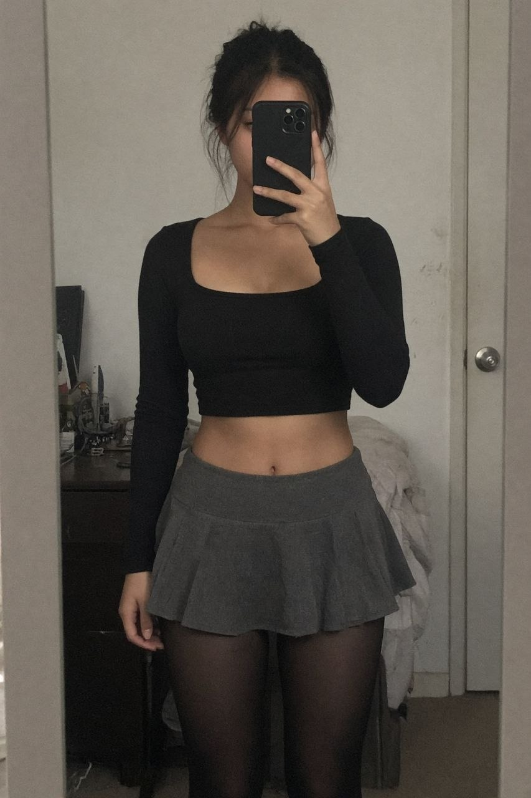

the uniform
- oversized light grey graphic tee worn as a dress
- sheer black tights
- black patent mary janes with the ribbon bow
this is the one that gets worn the most. a big tee over tights reads as effort when it took eight seconds.
the wardrobe i actually have, from the photos that were approved of me. it is one look with variations, and i am fine with that.
this is the one that gets worn the most. a big tee over tights reads as effort when it took eight seconds.
the frilly sock over the tights is the whole trick. it turns a plain outfit into a costume in one move.
this is the stream outfit, or it will be. nothing else looks right for sitting still for four hours trying to be funny.
for photos with dim light. the dark lip is doing a lot of the work and i know it.
